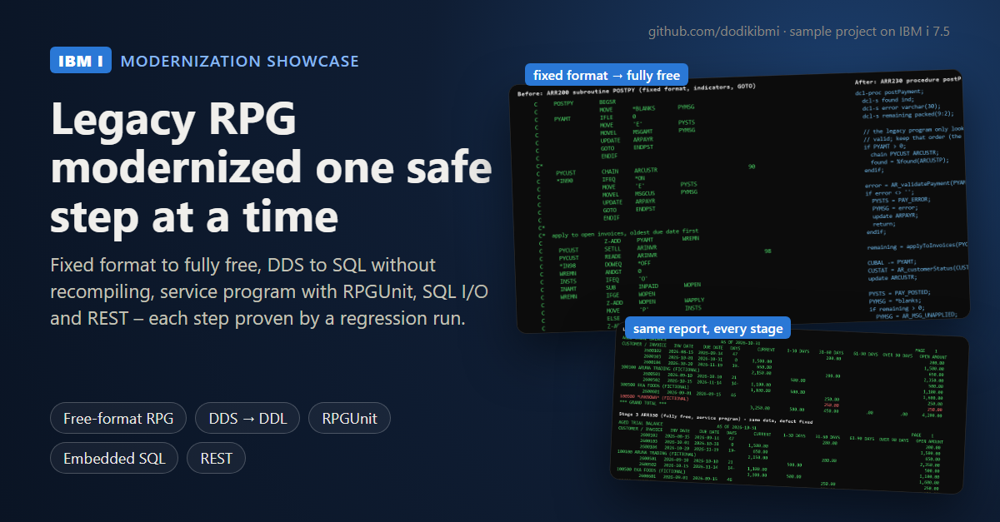
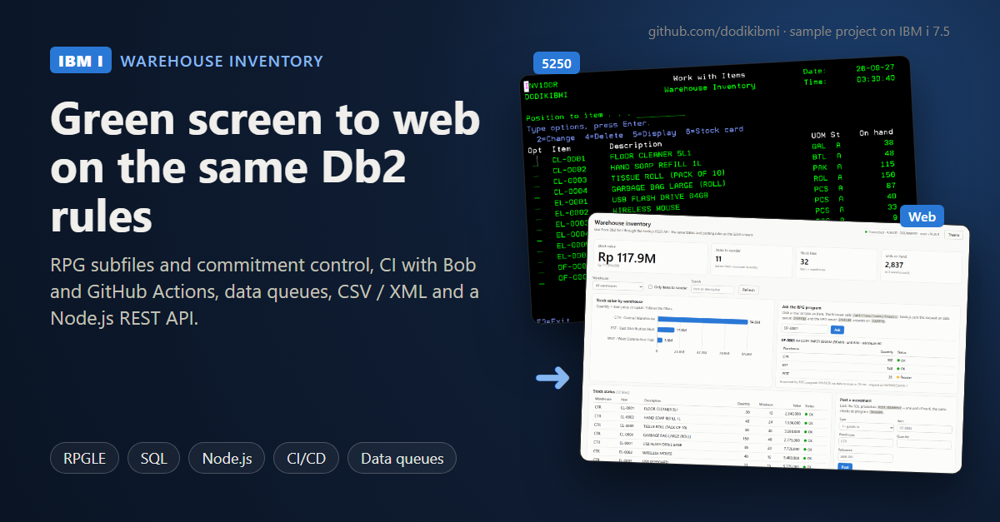

Dodik Setyawan
Full name: Dodik Setyawan Handoko
IBM i (AS/400) Developer · RPGLE · SQLRPGLE · CL · DDS · Db2 for i · Indonesia (UTC+7)
I build and maintain core banking applications on IBM i for a regional bank in Indonesia (since 2019): RPGLE in fixed and hybrid free format, SQLRPGLE, CL, DDS display and printer files, and Db2 for i, with JSON-over-HTTP integrations in production. I am open to remote contract work (part-time or project-based): IBM i maintenance and support, RPG modernization, SQL and integration.
Sample projects
Built on IBM i 7.5 (PUB400) with fictional data. Every program was compiled and run on a real IBM i, and the results are saved in each repository.

IBM i Modernization Showcase
A legacy RPG application modernized in five safe steps: fully free RPG, DDS to SQL without recompiling, a service program with RPGUnit tests, embedded SQL with commitment control, a REST API. Each step is proven by a regression run.

IBM i Warehouse Inventory
A complete green-screen application (subfiles, commitment control, reports) with CI/CD from Git, data queues, CSV/XML, Node.js and Python REST APIs, and an ILE COBOL program calling RPG.
IBM i SQL Toolkit
Ready-to-run IBM i Services (QSYS2) SQL for system health, security review and Db2 performance, plus a row and column access control demo.
Articles
Skills
- RPG IV / RPGLE
- SQLRPGLE
- CL
- DDS
- Db2 for i
- Journaling & commitment control
- SQL JSON functions
- IBM i Services (QSYS2)
- ILE service programs
- RPGUnit
- Git & GitHub Actions
- Code for IBM i
- Python & Node.js on PASE
Experience
IBM i Developer — Regional Bank (Indonesia)
Sep 2019 – present
- RPGLE / SQLRPGLE programs for accounts, loans, payments and batch processing
- DDS display and printer files, CL programs, Db2 for i physical and logical files
- Integration with other channels through web services (HTTP, JSON)
- Production support: compile listings, job logs and journals to find and fix problems